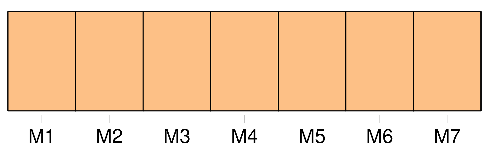
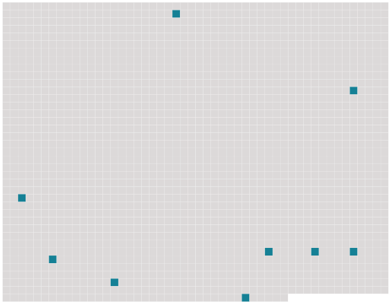

Longueur nb maillons : 9 mentions |
  |
Il avait échoué sur cet écueil comme tous ceux qui ne sont point préparés de bonne heure au rude combat de la vie, tous ceux qui voient l'existence à travers un nuage, qui ignorent les moyens et les résistances, en qui on n'a pas développé dès l'enfance des aptitudes spéciales, des facultés particulières, une âpre énergie à la lutte, tous ceux à qui [on] n'a pas remis une arme ou un outil dans la main. [19 phrases]
Il répétait à sa femme en se frottant les mains : [27 phrases] Et, sur les côtés, les promeneurs étaient si nombreux qu' [on] eût dit deux longs rubans noirs se déroulant, depuis l'Arc de Triomphe jusqu'à la place de la Concorde. [16 phrases]
Il répétait : [On] ne vient pas tuer les gens dans la rue quand [on] ne sait pas conduire un cheval. [10 phrases] Il donna son nom, Hector de Gribelin, attaché au ministère de la Marine ; et [on] attendit des nouvelles de la blessée. [7 phrases]
Aucun membre n'était cassé, mais [on] craignait une lésion interne. |
 |
La ressource peut être téléchargée sur la page Ortolang
Si vous avez des questions ou vous voyez des erreurs, merci d'envoyer un mail à silvia.federzoni89@gmail.com
Site développé par S. Federzoni (contact)